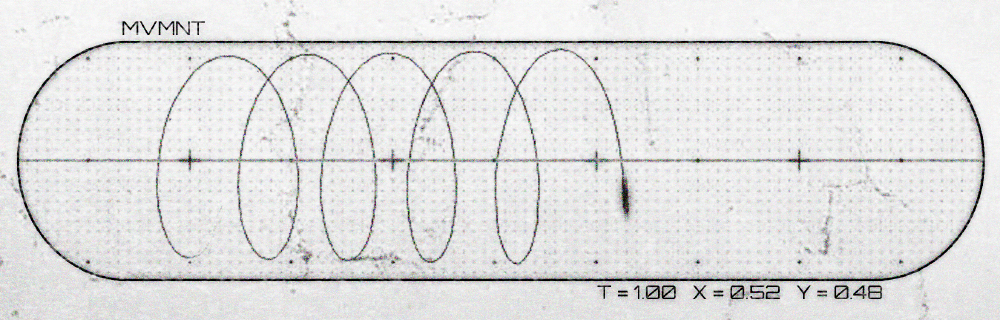

This work is the result of a personal observation of the relationship between four different frameworks. These observations emerged from the components of the creative domain, though I would be interested if some of the ideas presented here could be transferable.

Keep reading if you are interested in the underlying symbolism involved in this piece
The initial observation that started the development of this representation was the following sketch:

It seemed that there was this direction of flow, between "things released" and "things consumed." People would create, and their creations would go on to people who would consume these creations. Based on their reactions, information would feed back to the people who create.
The loop revealed itself. It was a start, at least.

Driven by an intrigue to unveil the nature of this cycle, I began exploring different ways of visually representing this "information flow." Things started to become clear when I organzied both groups in concentric circles around each other. On one hand, you could see it as creators in the center, surrounded by curators, information flowing outwards. On the other hand, you could reconfigure it so consumers are in the center, surrounded by creators, information flowing inwards. Drawing these two configurations made me realize that both versions are the same thing. I was just turning the "mesh" that defined the relationship between the two groups inside-out.
Now it started getting exciting. No more was this a line curving to form a circle, it was a form. Whatever it was, it had some kind of dimension to it. What this meant was that, you could start point A, then walk in either direction, and end up at point B.
It was at this point that I needed to increase my resolution and define some more areas to work with. I thought, if the consumer level is at the end of this waterfall of information flow, how does one climb up? I split it into to main components: CRAFT and OPENNESS. At its most basic, these are the two fundamental components that let someone climb the waterfall of information flow.
While craft is pretty straightforward, in hindsight I should have picked a better word for openness, because the way I'm utilizing it here is in reference to having an interpretation. This interpretation drives the subjective preference of an individual, basically taste. Openness does influence this component, but I don't think it defines it. However, at the time of making this, I used openness, so just keep this in mind.
From there, the four frameworks revealed themselves:
CONSUMER, CREATOR, CURATOR, and ARTIST
From the point of the CONSUMER framework, you can either go in the OPEN direction or the CRAFT direction. CRAFT will take you to the CREATOR framework. In visual art terms, this is learning and practicing the fundamentals of drawing, painting, sculpting, etc; The degree of craftsmanship. The other direction, OPEN, will take you to the CURATOR framework. Developing taste, exploring all that there is to offer within a domain, learning the state of the domain, where is it headed, where has it been, what is its history, who's currently involved. But what's also important in the CURATOR framework is the interpretation as mentioned previously...to put simply, what is your own opinion of the various areas in the domain? Do you prefer hyperrealism, abstract stylization, or somewhere in the middle? Do you like the way movies are being shot, or did you prefer the way they were shot in the 80s? That's the CURATOR framework.
Now, in the event the above wasn't clear, I made a Punnett Square diagram that abstractly describes how OPEN and CRAFT interact to form these groups. This was moreso for me as I tried to understand this relationship, but perhaps maybe it'll help someone else.
In the realm of communication, users have to balance the ratio between Noise and Signal in order to effectively send information from A to B. Because we're working with visual communication, these are the two factors we have to deal with.
OPENNESS affects the signal complexity.
CRAFT affects the signal noise.
To put it simply, ARTISTs broadcast a signal that is both clear and complex. Its appearance is "optimization".
CREATORs broadcast a clear signal without complexity, CURATORs broadcast noisy complex signals,
and CONSUMERs broadcast noisy signals without complexity.
If it's still a bit confusing, one last perspective to try is to view it from the angle of language. CRAFT is your pronunciation, enunciation, and articulation. OPEN is knowledge of existing languages, dialects, accents, metaphors, grammar, and even invented (self or other) languages. Think of a monolingual vs a polyglot. The monolingual may be either poetic or struggle to form words, but in either case is limited by the single dictionary. The polyglot can also be poetic or struggle to form words, but has other languages that they can utilize.
The reduction of noise is most noticably seen when comparing someone's early work to their later work. CRAFT is the most commonly taught area of art and design (from my personal experience).
OPENNESS is a bit harder to see in a vacuum, but it mostly comes down to what someone is saying. I use the word "complexity" but really it's more of an exposure of one's subjective interpretation of the world around them. OPENNESS (in this case), is a window to a person's perspective. Their internal "language" is reflected in OPENNESS, and the more developed/unique this language is, the more "poetic" they internally are. In my experience, this area is not as commonly taught in art and design.
"Wow--that's a lot of words. Too bad I'm not reading them"
tl;dr CREATORs employ their craft. CURATORs employ their taste. ARTISTs employ both craft and taste at once.
Understanding these two pathways began leading me towards the form that I was initially looking for. How was it that you could walk from CONSUMER, passing through the land of CRAFT then OPEN, to land at ARTIST. But then, starting from CONSUMER, walking in the other direction, passing through the land of OPEN then CRAFT, to land at ARTIST?
Because I couldn't picture the form yet in my head, I continued to draw it out externally, searching for the geometry that tied all of these components together. It was clear to me that OPEN and CRAFT are two vectors, left and right for example. In order to go straight, you must oscillate between left and right. "Straight" is the emergent vector that arises from the oscillation between left and right. Being an ARTIST, in this context, means when CRAFT is engaged, so is OPEN, and visa versa. "ARTIST" is the emergent vector that arises from CRAFT and OPEN.
"Don't you just travel in a straight line around a circle? Isn't there only one direction?"
Think of it this way:
Starting from inside the toroid's centerpoint, you set out towards the North Ring. Upon reaching the North Ring, you cannot keep going more North...so what do you do? You set out towards the South Ring. However, what keeps you from returning from where you came is retaining the information that got you to the North Ring. By now traveling towards the South Ring, you end up at the Outer Circumference.
What keeps you from going past the Outer Circumference onwards to the South Ring? The information you retained previously! Because you have already traveled Northwards, you run into the opposite strategy (South first, then North). And since you've already traveled North, there's nowhere else to go.
"Wow--that's a lot of wor-"
tl;dr Go Northwards until you cannot go more North, then go Southwards. Or go Southwards until you cannot go more South, then go Northwards. You do not need to pass through a color twice.
Now, it's very important to note that you can turn this inside-out, and any step inbetween. CONSUMER can be in the centerpoint and ARTIST can be the Outer Circumference. Or you can have ARTIST be the centerpoint and CONSUMER be the Outer Circumference. Either way, it doesn't matter. What does matter, is the order: CONSUMER > CREATOR/CURATOR > ARTIST. Information always flows from the ARTIST towards the CONSUMER. Being an ARTIST to is walk against this information flow.
Now that we have the form down, it was time to get to business and create an actual representation for this idea. The actual torus itself wasn't that hard, especially since Blender has the mesh already built-in and ready to go. Then it was just a matter of adding a wireframe modifier and an emission material that changed colors based on camera depth. I also added rings at the North and South rings as well as the Outer Circumference. Bringing that all into photoshop, I began adding graphic design to turn it into what it looks like in the final image.
Some of the last remaining symbolism that is left to discuss are the two graphics at the bottom of poster.
Starting off with the bottom-left is the emergent axis of ARTIST. X and Y are OPEN and CRAFT respectively, such that it is the inclusion of both axes that generates the perception of ARTIST.

Next on the bottom right represents the population density depending on one's position on the torus. As you travel towards ARTIST, population density diminishes. This is true for any domain, as you gain expertise, you separate further and further from the populous. Lots of people learn and hone CRAFT, and with the advent of Machine Learning, maximizing CRAFT is becoming widely accessible. Lots of people also learn and hone OPEN, these are people who have visions, project ideas, great opinions and direction, yet don't have the skill to manifest their visions. CREATORS and CURATORS typically depend on each other to build things greater than themselves: movies, shows, orchestrations, albums, vehicles, rockets, etc.
ARTISTs utilize both CRAFT and OPEN to manifest their own visions. They don't wait around --they make it themselves. They can work with other CREATORs, CURATORs, and CONSUMERs to also participate in creating something greater than themselves.